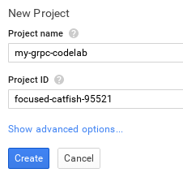
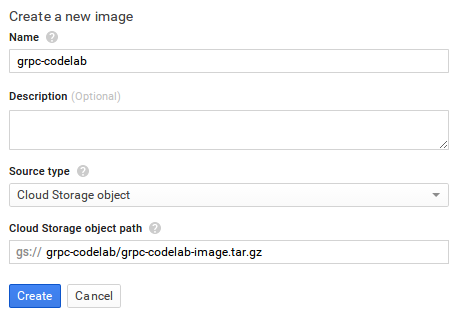
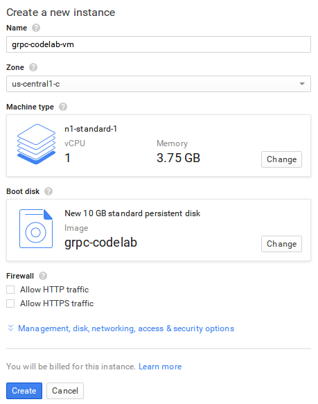
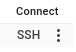
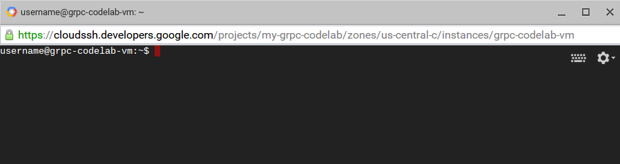
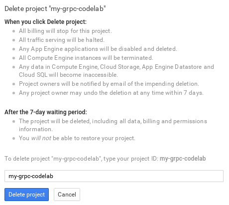

gRPC is a language-neutral, platform-neutral remote procedure call (RPC) framework and toolset developed at Google. It lets you define a service using Protocol Buffers, a particularly powerful binary serialization toolset and language. It then lets you generate idiomatic client and server stubs from your service definition in a variety of languages.
In this codelab, you’ll learn how to build a Node.js service that exposes an API using the gRPC framework. You'll interact with this service using a command line client written in Go that uses the same service description as the Node.js service. Finally, you will write a Node.js command line client for the gRPC service.
What you’ll learn
- The Protocol Buffer Language
- How to implement a gRPC service using Node.js
- How to implement a gRPC client using Node.js
What you’ll need
- Node.js
- Go
- gRPC C++ library
- Protobuf C++ library
- Protobuf bindings for Go
How will you use use this tutorial?
How would you rate your experience with building Node.js apps?
How would you rate your experience with building Go apps?
To run the sample application, you need to install the following dependencies:
- Git
- Node.js
- Go
- gRPC C++ library
- Protobuf C++ library >= 3.0.0-alpha-2
- Protobuf bindings for Go
A Compute Engine image that has all of these dependencies pre-installed is available for you to use so you can get started right away!
Set up your Compute Engine Virtual Machine
- Go to the Google Cloud Developer Console.
- Click Create Project.
- Give your project a unique name.
- Click Create.

Now add the gRPC codelab image to your project:
- Navigate to Compute > Compute Engine > Images.
- Click New image.
- Give your image a name.
- Choose Source type: Cloud Storage object
- Set Cloud Storage object path to: grpc-codelab/grpc-codelab-image.tar.gz
- Click Create.

This imports the Virtual Machine image for the gRPC codelab into your project.
Wait a couple of seconds while the image is imported and then create a Virtual Machine instance from the gRPC codelab image:
- Select the image you just created.
- Click Create instance:

To create the Virtual Machine instance:
- Give your new instance a name.
- Click Create.

Once the instance is created, click SSH to connect to it.


Now you’re ready to get started!
Summary
In this step, you set up your development environment.
Next up
Next, you will download and run the sample application.
You can either download all the sample code to your computer...
...or clone the GitHub repository from the command line:
git clone https://github.com/googlesamples/io2015-codelabs
Sample project layout:
Name |
Description |
client.go |
Command-line client for the server API. |
books/books.pb.go |
go library for the books gRPC service. |
Run the sample application
The sample application folder contains client.go, a command-line client for interacting with the gRPC service that you will create in this codelab.
To run the command-line client, first install the Go grpc package:
$ go get google.golang.org/grpc
Now, from the project directory, run the command-line client with no arguments to view the available commands:
$ go run client.go client.go is a command-line client for this codelab's gRPC service Usage: client.go list List all books client.go insert <id> <title> <author> Insert a book client.go get <id> Get a book by its ID client.go delete <id> Delete a book by its ID client.go watch Watch for inserted books
Try calling one of the available commands:
$ go run client.go list
You will see an error after a few seconds because the node gRPC server does not yet exist!
Let’s fix this!
Summary
In this step, you set up and ran the codelab sample application.
Next up
Next, you will implement a Node.js gRPC service that lists books.
In this step you will write the code to implement a Node.js gRPC service that lists books.
gRPC services are defined in .proto files using the protocol buffer language.
The protocol buffer language is used to define services and message types.
Let’s start by defining a service for books!
In the project directory, create a new file called books.proto and add the following:
books.proto
This defines a new service named BookService using the proto3 version of the protocol buffers language. This is the latest version of protocol buffers and is recommended for use with gRPC.
To run this service with node, first install the grpc npm package:
$ npm install grpc
Now create a new file called server.js and add the following:
server.js
grpc.load returns an object representing the .proto.
grpc.buildServer accepts an array of gRPC service objects and returns a constructor for a Server object that will serve the services provided.
Once you have a server for your service(s), you can instantiate it providing a map of each service to its methods handlers.
Finally, bind the server to port 50051 and call listen() to begin listening for incoming requests!
Run the server:
$ node server.js
Now run the go gRPC command-line client again to test the server API:
$ go run client.go list
This time, you will see a new error:
Great! This means that the server is running and the go client communicated with it over gRPC!
Let’s fix this by implementing a List method!
List books
In the project directory, edit books.proto and update BookService with the following code:
books.proto
Each service rpc method accepts a (request) message and returns a (response) message.
Making a request to List books requires no parameters so the request message for List has no fields (as defined by the Empty message).
The Book message represents a single book object with id, title, and author fields.
List returns a repeated list of Book messages. repeated specifies that this message can be repeated any number of times.
Now update the Node.js application to respond to calls to the List method of the BookService.
Edit the server.js file and add the following code, replacing the current var server with the following:
server.js
To register handlers for gRPC service methods, handler functions are passed into the Server constructor for each method. When the service method is invoked, the handler function is called with a call object representing the request message. To respond to the method, call callback providing an error object (or null) and an object representing the response message. In this case, we return a JavaScript object with fields matching those defined in book.proto for the Book message type.
This implements the List rpc call, returning a Book message.
To test this, stop your running node process by pressing CTRL-C and run it again:
$ node server.js
Now run the go gRPC command-line client again:
$ go run client.go list
You should now see this book listed!
Summary
In this step, you implemented a gRPC service that lists books.
Next up
Next, you will insert new books via gRPC calls.
In this step you will write the code to implement adding new Book objects via the gRPC service.
To begin, edit books.proto and update BookService to the following:
books.proto
This defines a new Insert rpc call that takes a Book message as its request and returns an Empty response.
To implement the Insert method in the server, edit server.js and update var server to the following:
server.js
The added insert function implements the Insert rpc call, adding the received Book message to the books array and returning an Empty message.
Handler functions access the request message via call.request. In this case, call.request is a JavaScript object with id, title, and author fields representing a Book message.
To test this, restart the node server and then run the go gRPC command-line client’s insert command, passing id, title, and author as arguments:
$ go run client.go insert 2 "The Three Musketeers" "Alexandre Dumas"
You should see an empty response:
To verify that the book was inserted, run the list command again to see all books:
$ go run client.go list
You should now see 2 books listed!
Summary
In this step, you extended the gRPC service to support adding books.
Next up
Next, you will extend the gRPC service further to support getting and deleting individual books.
In this step you will write the code to get and delete Book objects by id via the gRPC service.
To begin, edit books.proto and update BookService with the following:
books.proto
This defines a new Get rpc call that takes a BookIdRequest as its request and returns a Book as its response.
A BookIdRequest message type is defined for requests containing only a book’s id.
To implement the Get method in the server, edit server.js and add the following get handler function:
server.js
If the books array contains a book with the id requested, the book is returned. If no book is found with the requested id, a NOT_FOUND error is returned.
To test this, restart the node server and then run the go gRPC command-line client’s get command, passing id as an argument:
$ go run client.go get 123
You should see the book response!
Now try getting a book that doesn’t exist:
$ go run client.go get 404
You should see the error message returned:
Delete books
Now you will write the code to delete a book by id.
Edit books.proto and add the following Delete rpc method:
books.proto
Now edit server.js and add the following delete handler function:
server.js
If the books array contains a book with the id requested, the book is removed, otherwise a NOT_FOUND error is returned.
To test this, restart the node server and then run the go gRPC command-line client to delete a book:
$ go run client.go list
Server sent 1 book(s).
{
"books": [
{
"id": 123,
"title": "A Tale of Two Cities",
"author": "Charles Dickens"
}
]
}
$ go run client.go delete 123
Server response:
{}
$ go run client.go list
Server sent 0 book(s).
{}
$ go run client.go delete 123
Get book (123): rpc error: code = 5 desc = "Not found"Great!
You implemented a fully functioning gRPC service that can list, insert, get, and delete books!
Summary
In this step, you extended the gRPC service to support getting and deleting books.
Next up
Next, you will add the ability for the client to connect to a stream that will receive books when they are inserted.
In this step you will write the code to add a streaming endpoint to the service so the client can establish a stream to the server and listen for added books.
gRPC supports streaming semantics, where either the client or the server (or both) send a stream of messages on a single RPC call. The most general case is Bidirectional Streaming where a single gRPC call establishes a stream where both the client and the server can send a stream of messages to each other.
To begin, edit books.proto and add the following Watch rpc method to BookService:
books.proto
When the client calls the Watch method, it will establish a stream and server will be able to stream Book messages when books are inserted.
To implement the Watch method in the server, edit server.js and add the following bookStream variable and watch handler function:
server.js
Handler functions for streaming rpc methods are invoked with a writable stream object.
To stream messages to the client, the stream’s write() function is called.
Edit server.js and update the insert function to stream Book messages to the client when books are inserted:
server.js
To test this, restart the node server and then run the go gRPC command-line client’s watch command:
$ go run client.go watch
Now, in another terminal, run the go gRPC command-line client’s insert command to insert a book:
$ go run client.go insert 2 "The Three Musketeers" "Alexandre Dumas"
Check the terminal client.go watch where is running. It should have printed out the inserted book!
$ go run client.go watch
Server stream data received:
{
"id": 2,
"title": "The Three Musketeers",
"author": "Alexandre Dumas"
}Summary
In this step, you added a streaming gRPC endpoint to the service to stream inserted books to a connected client.
Next up
Next, you will write a command-line client to interact with your gRPC service.
In this step, you will write the code to implement a Node.js command-line client that calls your gRPC service.
The result will be functionally equivalent to the client.go script that you have been using so far in this codelab!
Start by running the gRPC server:
$ node server.js
Now, in another terminal, create a new file called client.js in the project directory and add the following:
client.js
This requires the grpc node module and loads books.proto (exactly like you did in server.js previously).
The client object for the gRPC service is created by calling the BookService constructor, which is dynamically created from the service definition found in books.proto.
The list() function takes a request message object as a parameter ({} in this case to represent an Empty message), followed by a callback function that will be invoked with an error object (or null) and a response message object (a Book message in this case).
The service client provides functions for each of the rpc methods defined in the protocol buffer:
books.proto
This means that you can now list(), insert(), get(), delete(), and watch() books!
Now run the command-line client:
$ node client.js list
{ books:
[ { id: 123,
title: 'A Tale of Two Cities',
author: 'Charles Dickens' } ] }You should see books listed!
Next, to implement the command-line client, update client.js with functions for list(), insert(), get(), and delete():
client.js
To implement the watch() function, which receives a stream of Book messages, an event handler is registered:
client.js
The on('data') function callback will be called with a Book message object whenever a book is inserted.
Finally, add code to parse command-line arguments:
client.js
Now run the command-line client:
$ node client.js list
{ books:
[ { id: 123,
title: 'A Tale of Two Cities',
author: 'Charles Dickens' } ] }All of the commands you previously ran via client.go should now be available via your Node.js gRPC command-line client!
$ node client.js insert 2 "The Three Musketeers" "Alexandre Dumas"
{}
$ node client.js list
{ books:
[ { id: 123,
title: 'A Tale of Two Cities',
author: 'Charles Dickens' },
{ id: 2,
title: 'The Three Musketeers',
author: 'Alexandre Dumas' } ] }
$ node client.js delete 123
{}
$ node client.js list
{ books:
[ { id: 2,
title: 'The Three Musketeers',
author: 'Alexandre Dumas' } ] }
$ node client.js get 2
{ id: 2,
title: 'The Three Musketeers',
author: 'Alexandre Dumas' }Summary
In this step, you wrote a command-line client in Node.js that interacts with your gRPC service.
What we've covered:
- The Protocol Buffer Language
- How to implement a gRPC server using Node.js
- How to implement a gRPC client using Node.js
Next Steps:
- Learn to implement a gRPC client for your service using another language.
- Learn to deploy your Node.js service on GCP's Managed VMs
- Learn to persist your data to Cloud Datastore
If you created a Compute Engine Virtual Machine, you can delete it now.
To delete the project that you created for this codelab:
- Go to the Google Cloud Developer Console.
- Click on the trash can icon next to the project that you created for this codelab.
Then follow the steps to confirm project deletion:
- Type your project ID.
- Click Delete project.
